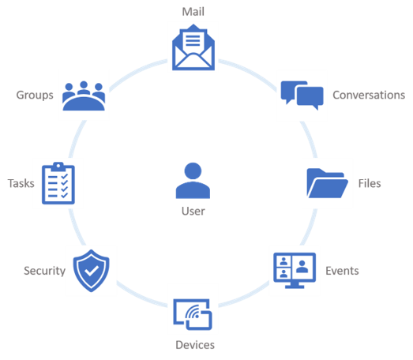
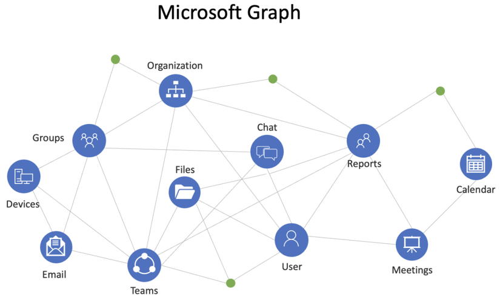

What Is Microsoft Graph?
Microsoft Graph is the gateway to data and intelligence in Microsoft cloud services like Microsoft Entra and Microsoft 365.
Source: Microsoft Graph overview, Microsoft LearnThe Microsoft Graph API exposes a single endpoint, https://graph.microsoft.com. You call it with REST requests or through the Microsoft Graph SDKs, and you authenticate once with an access token issued by the Microsoft identity platform.
Instead of learning a separate API for mail, files, users, and Teams, you learn one request model, one permission model, and one error format, and you reuse them everywhere.
One endpoint
graph.microsoft.com fronts users, groups, mail, calendars, files, sites, Teams, devices, and more.
One identity model
Microsoft Entra ID issues the token. Permissions such as User.Read control what the token can do.
Connected data
Resources link through relationships, so you can move from a user to their manager, groups, files, or meetings.
What Microsoft Graph Reaches
Every client talks to the same endpoint. Microsoft Graph routes the request to the service that owns the data.
flowchart LR
APP[Your app or script] -->|Step 1: get token| ENTRA[Microsoft Entra ID]
APP -->|Step 2: call API| GRAPH[graph.microsoft.com]
GRAPH --> M365[Microsoft 365]
GRAPH --> EID[Entra ID directory]
GRAPH --> SEC[Intune and security]
GRAPH --> WIN[Windows services]
class APP external
class ENTRA accent
class GRAPH azure
class M365,EID,SEC,WIN data
Your app gets a token from Microsoft Entra ID, then sends every request to one endpoint.
| Service family | Examples |
|---|---|
| Microsoft 365 core services | Bookings, Calendar, Excel, OneDrive, OneNote, Outlook/Exchange, People, Planner, SharePoint, Teams, To Do, Viva Insights, Microsoft Search |
| Enterprise Mobility + Security | Microsoft Entra, Intune, Identity Manager, Advanced Threat Protection |
| Windows services | Activities, devices, notifications, Universal Print |
| Business services | Dynamics 365 Business Central, Microsoft Partner Center |
Core Resources
Most apps start with a handful of resources centered on the user. Each one is a URL you can read, and most are also ones you can create, update, or delete with the right permission.

| Resource | Example request | Typical use |
|---|---|---|
| Users | GET /v1.0/users | Profiles, accounts, managers, licenses |
| Groups | GET /v1.0/groups | Security and Microsoft 365 groups, memberships |
| Applications | GET /v1.0/applications | App registrations, credentials, permissions |
| Calendars | GET /v1.0/me/events | Meetings, availability, scheduling |
| Files | GET /v1.0/me/drive/root/children | OneDrive and SharePoint documents |
GET /v1.0/me/messages | Read, send, and organize Outlook mail | |
| Sites | GET /v1.0/sites/root | SharePoint sites, lists, and pages |
| Teams | GET /v1.0/me/joinedTeams | Teams, channels, chats, messages |
| To Do tasks | GET /v1.0/me/todo/lists | Task lists and tasks |
Navigate the Graph
Resources are connected by relationships. You follow them in the URL path, the same way you follow links between pages. That network of connected data is why it's called a graph.

In a request URL, a relationship is just the next path segment:
flowchart LR
ME(["/me"]) -->|manager| MGR[User]
ME -->|memberOf| GRP[Group]
GRP -->|members| MEM[Users]
ME -->|events| EVT[(Events)]
ME -->|messages| MSG[(Messages)]
ME -->|drive| DRV[(OneDrive files)]
class ME accent
class MGR,GRP,MEM azure
class EVT,MSG,DRV data
Purple is the signed-in user, blue are directory objects, teal are content stores.
For example, to prepare for a meeting you can read the event attendees, look each one up as a user, follow manager to their manager, and follow memberOf to their groups, all with the same token.
| Request | Returns |
|---|---|
GET /v1.0/me | Your profile |
GET /v1.0/me/manager | Your manager |
GET /v1.0/me/events | Your calendar events |
GET /v1.0/me/drive/root/children | Files in the root of your OneDrive |
GET /v1.0/users | Users in your organization |
GET /v1.0/groups | Groups in your organization |
/me alias always means the signed-in user, so it only works when a user is signed in (delegated access). Background services use /users/{id} instead.Capabilities and Use Cases
Four capabilities show up in almost every Microsoft Graph solution:
Access user data
Read profiles, mail, calendars, and files to personalize your app for the person using it.
Manage resources
Create and update users, groups, app registrations, and Teams from code instead of the portal.
Automate workflows
Replace manual admin and onboarding tasks with scripts and background jobs.
Extend your apps
Bring Microsoft 365 context such as meetings, documents, and colleagues into your own product.
Use Case Scenarios
Use Microsoft Graph when the data or the action lives in Microsoft 365 or Microsoft Entra ID and you need it in real time, for one user or across the tenant. Each scenario below shows the calls involved and whether it runs as the user (delegated) or as the app (app-only).
| Scenario | What the app does | Typical calls | Access |
|---|---|---|---|
| Employee onboarding | Create the account, assign a license, add to groups; disable the account when the person leaves | POST /usersPOST /users/{id}/assignLicensePOST /groups/{id}/members/$refPATCH /users/{id} | App-only |
| Identity hygiene reports | Find unlicensed users, guests, and app registrations with expiring secrets | GET /users?$filter=userType eq 'Guest'GET /applications?$select=displayName,passwordCredentials | App-only |
| Personalized intranet | Show the signed-in user's profile, manager, photo, upcoming meetings, and files | GET /me, /me/managerGET /me/photo/$valueGET /me/calendarView | Delegated |
| Meeting scheduler | Suggest times when everyone is free, then book the meeting | POST /me/findMeetingTimesPOST /me/events | Delegated |
| Document automation | Save generated reports to SharePoint and share them | PUT /sites/{id}/drive/root:/{path}:/contentPOST /drives/{id}/items/{id}/createLink | Either |
| Teams notifications | Post updates to a channel or a user's activity feed | POST /teams/{id}/channels/{id}/messagesPOST /users/{id}/teamwork/sendActivityNotification | Either, per API |
| Sync to another system | Keep an HR, CRM, or ticketing system in step with users and groups | GET /users/deltaPOST /subscriptions | App-only |
| Security operations | Pull alerts and risky users into a SIEM or a response workflow | GET /security/alerts_v2GET /identityProtection/riskyUsers | App-only |
Microsoft Graph for AI Agents
An AI agent needs two things from your organization: context to ground its answers, and tools to take action. Microsoft Graph provides both, under the same identity, permission, and consent model you use for any other app.
flowchart LR
U([User]) --> AG[AI agent]
AG -->|token| ENTRA[Microsoft Entra ID]
AG -->|tools| API[Microsoft Graph API]
AG -->|grounding| RET[Copilot Retrieval API]
AG -->|natural language| MCP[MCP Server for Enterprise]
API --> M365[(Microsoft 365 data)]
RET --> M365
MCP --> API
class U neutral
class AG accent
class ENTRA accent
class API,RET,MCP azure
class M365 data
Every path ends in Microsoft Graph, so the agent can never see more than its token allows.
Agent Scenarios
Meeting prep agent
Reads tomorrow's events, the attendees' profiles, and the files shared in the invite, then writes a briefing. Delegated: Calendars.Read, User.ReadBasic.All, Files.Read.All.
Knowledge (RAG) agent
Answers policy and product questions grounded in SharePoint, OneDrive, and Copilot connector content through the Copilot Retrieval API, which keeps data in place and respects document permissions and sensitivity labels.
IT helpdesk agent
Answers "Which users didn't sign in last month?" or "How many guest users do we have?" by translating the question into read-only Microsoft Graph calls through the MCP Server for Enterprise.
Task agent
Turns a conversation into actions: creates a To Do task, drafts a reply, or books a follow-up meeting on the user's behalf, after the user confirms.
Onboarding agent
Runs the onboarding steps from the scenarios table when HR approves a hire, using its own identity and application permissions scoped to what the job needs.
AI governance
Reports Copilot adoption with the Copilot usage reports API and archives Copilot interactions for compliance with the Interaction Export API.
Which Building Block to Use
| Your agent needs to | Use | Good to know |
|---|---|---|
| Read or change Microsoft 365 data as a tool | Microsoft Graph API | Standard license terms. Covers create, read, update, and delete across services. |
| Ground answers in documents (RAG) | Copilot Retrieval API | Under the Microsoft Graph namespace (/copilot). Needs a Microsoft 365 Copilot license, or pay-as-you-go (preview) for tenant-level sources. Requires Files.Read.All and Sites.Read.All for SharePoint and OneDrive. |
| Query directory data in natural language | MCP Server for Enterprise Preview | Read-only Microsoft Entra scenarios, 100 calls per minute per user, global cloud only. Works with any MCP-capable client. |
| Make external data available to Copilot and agents | Microsoft 365 Copilot connectors | Indexes third-party content into Microsoft Graph. See API, Copilot Connectors, or Data Connect. |
| Give the agent its own governed identity | Microsoft Entra Agent ID | Agent identities and blueprints that support delegated and app-only tokens, for agents built in Copilot Studio or on other platforms. |
Guardrails for Agents
- Prefer delegated access so the agent can never exceed what the signed-in user can see.
- Grant the fewest permissions per tool, and keep read and write tools separate.
- Ask the user to confirm before any write: sending mail, changing users, or deleting content.
- Use
$selectand$filterso only the data the model needs leaves Microsoft Graph. - Treat mail, chat, and document content as untrusted input: it can contain instructions aimed at the model.
- Monitor agent traffic with Microsoft Graph activity logs; requests made through the MCP Server for Enterprise are logged there too.
API, Copilot Connectors, or Data Connect
Three components work together on the Microsoft 365 platform. This workshop focuses on the Microsoft Graph API.
Microsoft Graph API
Real-time REST access to a single user's data or the whole tenant. Operates on the source data.
Microsoft 365 Copilot connectors
Formerly Microsoft Graph connectors. Bring external data into Microsoft Graph so Microsoft Search and Copilot can use it.
Microsoft Graph Data Connect
Deliver Microsoft Graph data at scale to Azure data stores on a recurring schedule, for analytics.
| Need | Graph API | Data Connect |
|---|---|---|
| Act on data for one user or the tenant, right now | ||
| Extract large volumes on a schedule for analytics | ||
| Write or update data | ||
| Tooling | REST, SDKs | Azure Data Factory |
What It Costs
Most Microsoft Graph APIs are standard APIs. They're available at no additional cost with your users' Microsoft 365 or Microsoft Entra licenses, within documented throttling limits.
A small set of high-capacity (bulk export or import) and advanced APIs are metered. To call them, you associate your app with an active Azure subscription, and usage is billed to that subscription.
No Azure subscription needed
For standard APIs such as users, groups, mail, calendar, and files. You need a Microsoft Entra tenant and, for Microsoft 365 data, the relevant licenses.
Metered APIs
Require an Azure subscription and a confidential client app. Not available in national cloud deployments. Check the metering unit before you build.
Next Steps
Key takeaway
Microsoft Graph gives you one endpoint, one token, and one request model for Microsoft cloud data. What your app can reach depends on the permissions you grant it, which is the next topic.
- Continue with Set Up Your Environment.
- Try requests now in Lab 01: Explore Microsoft Graph with Graph Explorer.